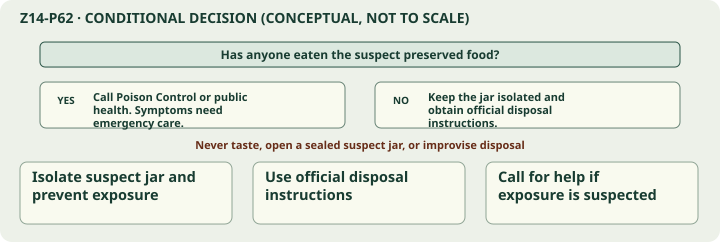

Z14-P62 · Food production and preservation · New manuscript
Isolate suspect canned food and follow official disposal guidance
Protect people, pets, and wildlife from fatal botulinum toxin when discarding suspect low-acid jars.
When it applies · Unsealed, bulging, spurting, foaming, or improperly processed low-acid home-canned jars.
Equipment · Heavy gloves, double trash bags (unopened) OR large dedicated boiling pot (opened/leaking), and plain bleach-water wipe.

Actions
- Keep suspect jars away from people and animals. Never taste the contents or open a sealed suspect container to inspect it.[P10]
- Get the current NCHFP or public-health disposal directions. Identify whether the container is sealed, open or leaking and whether anyone ate the food. Keep children and pets out of the area.[P10]
- For a suspected exposure, call Poison Control or public health promptly. Trouble swallowing or breathing, double vision or progressive weakness after eating suspect food requires emergency medical care. Keep the container isolated and follow health authorities’ instructions.[M15, P23]
Failure recognition · Dumping an unsealed jar of home-canned green beans onto a backyard compost pile where a pet dog licks it.[P10]
Verify · Confirm no tasting, no access by pets or children, and receipt of official handling or disposal directions.[P10]
Stop or change course · For a leaking container, contaminated surface or symptomatic exposure, avoid handling and seek public-health or emergency guidance.[P10, P23]
Evidence and editorial notes
- M15 · National Capital Poison Center · First Aid for Poisonings (Current web edition)
- Section: First aid for swallowed, inhaled, skin and eye exposure; when to call 911 · Conditions: Suspected poisoning in the U.S.
Support: For collapse, seizure, breathing trouble or inability to wake call 911. Otherwise get timely poison-center advice. Do not induce vomiting.
Limitations: Substance and route determine immediate care. Keep rescuers away from contaminated scenes. · Conflicting evidence: See A02 claim audit for boundaries.
Editorial note: Separates 911 life-threat activation from Poison Control guidance. · Specialist reviewer: Medical toxicology and poison control
Primary source · checked 2026-11-25 - P10 · NCHFP · Identifying and Handling Spoiled Canned Food (current web edition)
- Section: Identifying and Handling Spoiled Canned Food · Conditions: Suspect home-canned food; identify sealed versus open or leaking without exposure
Support: Do not taste. Isolate from people and animals and use current NCHFP or local public-health disposal advice.
Limitations: A sealed lid alone cannot establish a safe process. Reprocessing a sound unsealed jar has separate conditions. Suspected exposure is P23. · Conflicting evidence: See A02 claim audit for boundaries.
Editorial note: Anchors spoilage inspection and safe disposal in Z14. · Specialist reviewer: Food microbiology and public health
Primary source · checked 2026-11-24 - P23 · CDC · Symptoms of Botulism (2024)
- Section: Foodborne botulism signs and urgent action · Conditions: Possible ingestion of suspect preserved food, particularly with neurologic symptoms
Support: Trouble swallowing or breathing, vision changes or weakness can indicate a medical emergency. Seek immediate emergency care for compatible symptoms.
Limitations: Symptoms alone cannot establish a diagnosis. Contact local public health or Poison Control for suspected exposures and disposal. · Conflicting evidence: See A02 claim audit for boundaries.
Editorial note: Added in A02 to separate a consequential source boundary. · Specialist reviewer: Public health and emergency medicine
Primary source · checked 2026-11-25
Source lineage · NCHFP Handling Spoiled Canned Food; new manuscript · Classification · New manuscript.